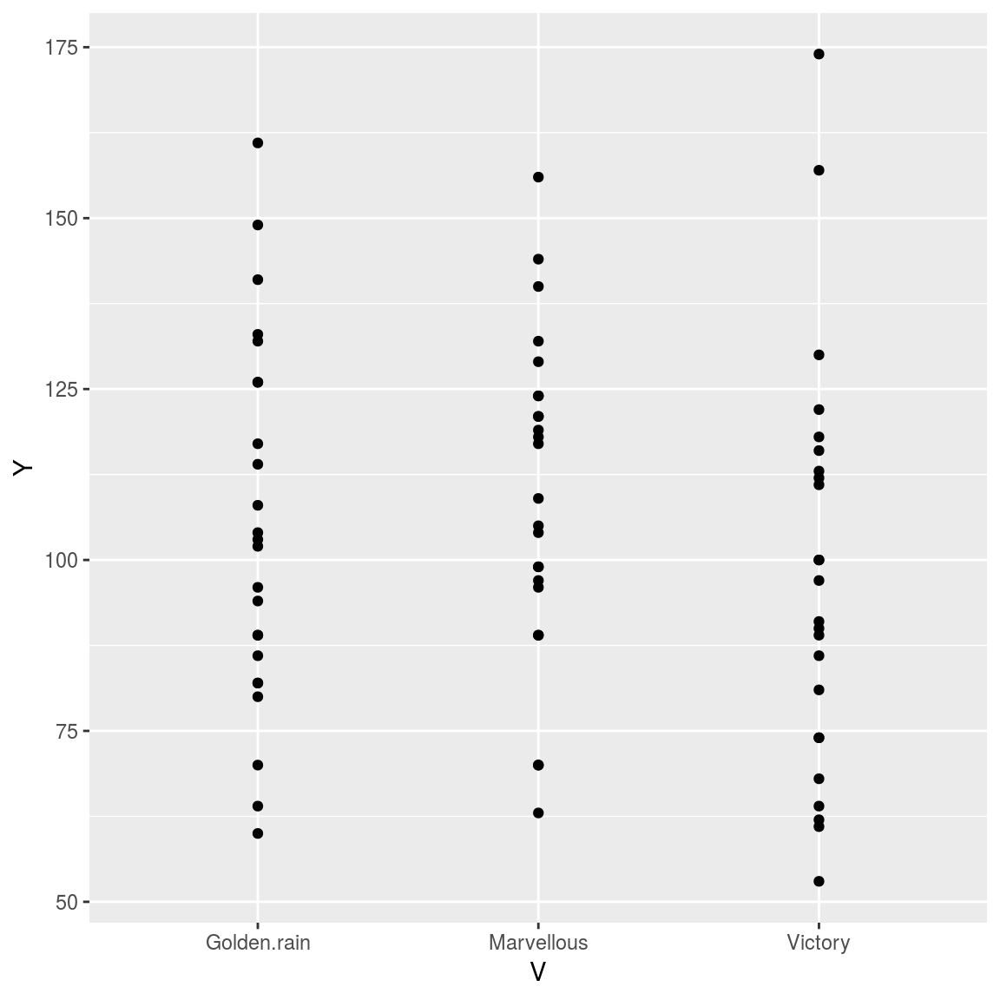
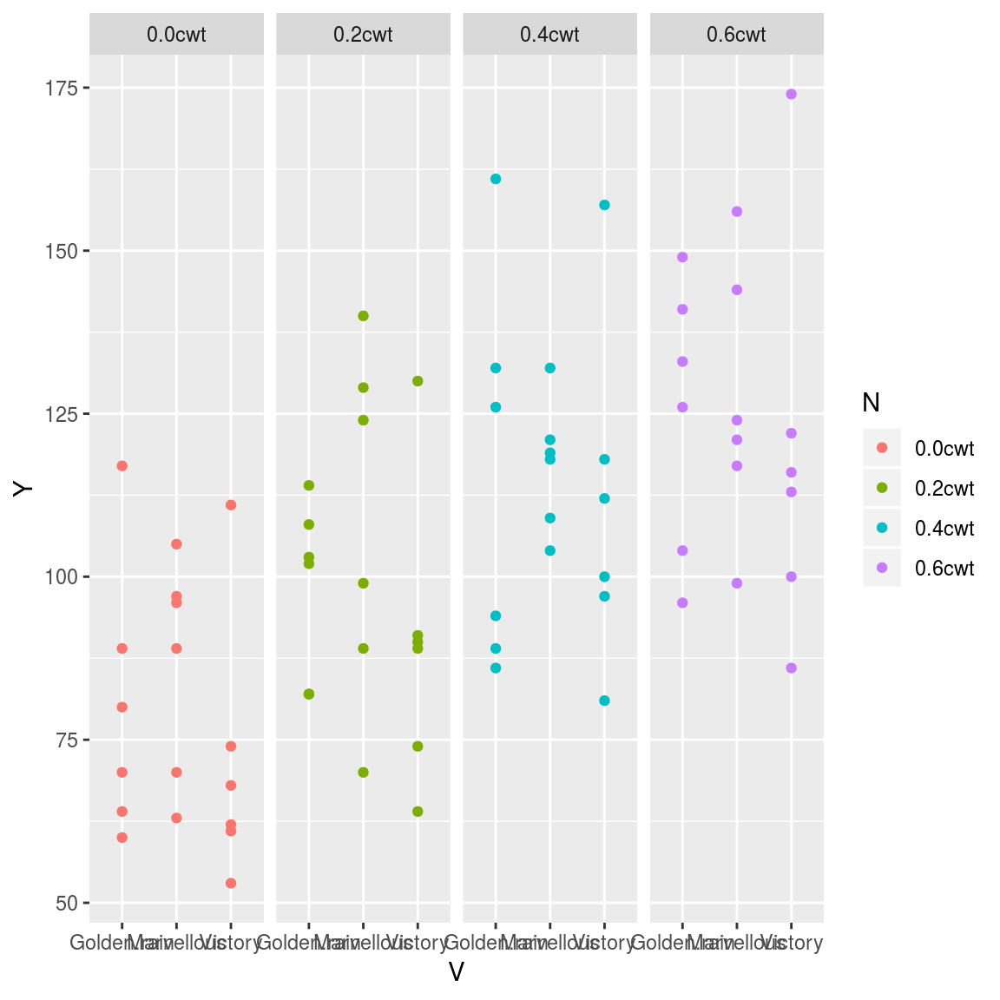
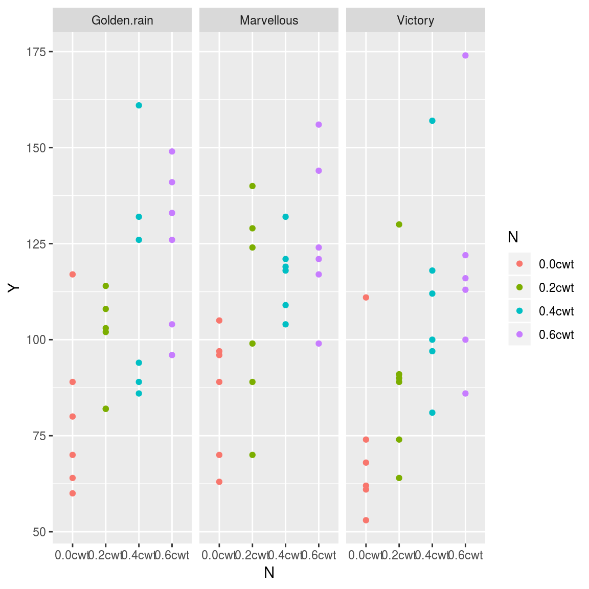
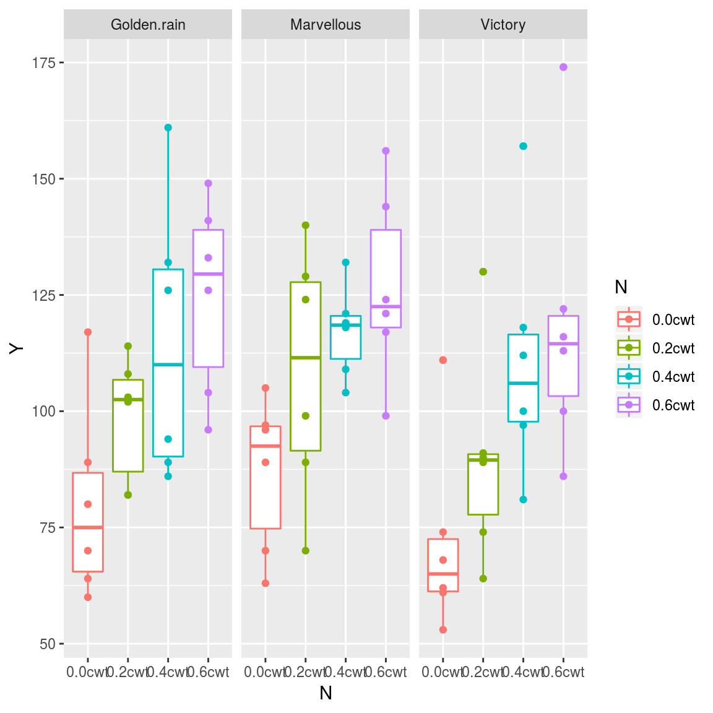

26 Linear mixed model in R
26.1 Data from an Oats Field Trial
The Oats data frame has 72 rows and 4 columns.
This data frame contains the following columns:
Block: an ordered factor with levels VI < V < III < IV < II < I
Variety: a factor with levels Golden Rain Marvellous Victory
nitro: a numeric vector
yield: a numeric vector
library(MASS)
library(summarytools)## Warning in fun(libname, pkgname): couldn't connect to display ":0"## system has no X11 capabilities, therefore only ascii graphs will be produced by dfSummary()##
## Attaching package: 'summarytools'## The following objects are masked from 'package:Hmisc':
##
## label, label<-dfSummary(oats)## Data Frame Summary
## oats
## Dimensions: 72 x 4
## Duplicates: 0
##
## --------------------------------------------------------------------------------------------------
## No Variable Stats / Values Freqs (% of Valid) Graph Valid Missing
## ---- ----------- ------------------------- -------------------- --------------- -------- ---------
## 1 B 1. I 12 (16.7%) III 72 0
## [factor] 2. II 12 (16.7%) III (100%) (0%)
## 3. III 12 (16.7%) III
## 4. IV 12 (16.7%) III
## 5. V 12 (16.7%) III
## 6. VI 12 (16.7%) III
##
## 2 V 1. Golden.rain 24 (33.3%) IIIIII 72 0
## [factor] 2. Marvellous 24 (33.3%) IIIIII (100%) (0%)
## 3. Victory 24 (33.3%) IIIIII
##
## 3 N 1. 0.0cwt 18 (25.0%) IIIII 72 0
## [factor] 2. 0.2cwt 18 (25.0%) IIIII (100%) (0%)
## 3. 0.4cwt 18 (25.0%) IIIII
## 4. 0.6cwt 18 (25.0%) IIIII
##
## 4 Y Mean (sd) : 104 (27.1) 51 distinct values : 72 0
## [integer] min < med < max: : : (100%) (0%)
## 53 < 102.5 < 174 : : : :
## IQR (CV) : 35.2 (0.3) : : : :
## . : : : : : .
## --------------------------------------------------------------------------------------------------summary(oats)## B V N Y
## I :12 Golden.rain:24 0.0cwt:18 Min. : 53.0
## II :12 Marvellous :24 0.2cwt:18 1st Qu.: 86.0
## III:12 Victory :24 0.4cwt:18 Median :102.5
## IV :12 0.6cwt:18 Mean :104.0
## V :12 3rd Qu.:121.2
## VI :12 Max. :174.026.2 Data visulization
library(ggplot2)
ggplot(oats, aes(x = V, y = Y)) +
geom_point()
library(ggplot2)
ggplot(oats, aes(x = V, y = Y, color = N)) +
geom_point() + facet_wrap(~N, nrow = 1)
library(ggplot2)
ggplot(oats, aes(x = N, y = Y, color = N)) +
geom_point() + facet_wrap(~V, nrow = 1)
library(ggplot2)
ggplot(oats, aes(x = N, y = Y, color = N)) +
geom_boxplot() +
geom_point() + facet_wrap(~V, nrow = 1)
26.3 Mixed linear model
politeness=
read.csv("http://www.bodowinter.com/tutorial/politeness_data.csv")
head(politeness)## subject gender scenario attitude frequency
## 1 F1 F 1 pol 213.3
## 2 F1 F 1 inf 204.5
## 3 F1 F 2 pol 285.1
## 4 F1 F 2 inf 259.7
## 5 F1 F 3 pol 203.9
## 6 F1 F 3 inf 286.9data(Oats)## Warning in data(Oats): data set 'Oats' not found